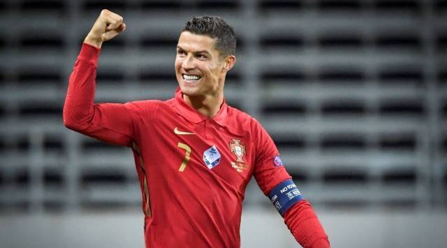

Cristiano Ronaldo

Cristiano Ronaldo, in full Cristiano Ronaldo dos Santos Aveiro,
(born February 5, 1985, Portugal).
Cristiano Ronaldo Biography:
-
Childhood :
The futbol star, Cristiano Ronaldo, was born in February 5,1985,in Funchal,Madeira, Portugal.Ronaldo is the youngest sibling of four children, his parent's names are Maria Dolores Dos santos and Jose Dinis Aveiro. Ronaldo's father Jose Dinis Aveiro named him after his favorite actor Ronald Reagan (also a president). Ronaldo was really poor as a child, and so he and his family lived in a tin-roofed home that overlooked the ocean. His life was harsh, Ronaldo's father often drank too much, witch led him to die from kidney problems in 2005 .Cristiano's mother worked as a cook and a cleaning person to keep her children alive and fed.Ronaldo went to a school attached to the traing centre for young futbol players at Sporting lisbon. Ronaldo would later be introduced to the game of soccer. -
Iintroduction to the sport of soccer:
While Cristiano's father worked at a boy's club as an equipment manager, Cristiano was introduced to the game of soccer.Ronaldo was so good at the game that by the time he was 10 years old,he was rocognized as a phenomenon.Cristiano's godfather said that he liked the game so much that "all he wanted to do as a boy was play futbol", said Fernao Sousa.Cristiano godfather also said that he miseed meals or escape out of his bedroom window with a soccer ball when he was supposed to do his homework. By Ronaldo's early teens he was really talented and so after a stint with National da liha da Madeira, when he was 16 years old, old enough to sign a professional contract with sporting he dropped out of school to fallow his dreams,and so his journey began. -
From Lisbon to Madrid ( adulthood ):
At the age of 16, while Cristiano Ronaldo was still in Sporting Lisbon,after a stint with Nacional da liha da Madeira, he got an opportunity to play against Manchester United. Ronaldo made such a spectacular impression that the Manchester United players asked their Director to enroll Cristiano Ronaldo. And to his suprise, two years later Manchester United paid Sporting Libson more than 12 million euros for his service. Ronaldo made his debut as a 61st minute subsitute for Nicky Butt against bolton on the opening day of the 2003-04 season in August 16,2003. Cristiano Ronaldo first goal with Man united was in November 1, 2003. Ronaldo wins the Champions League trophy with United for the first time since 1999. There was speculation that Ronaldo waned to play elsewhere, and so in 2009,he was transfered to the spanish soccer club Real Madrid. The soccer club agreed to pay manchester united 131 million dollars for Cristiano Ronaldo. Cristiano Ronaldo has achieved many goals, in addition to his FIFA World Player of the year award, Ronaldo has also won 3 Ballon d'OR, the Golden Boot, and been named the UEFA Club Forward of the year, witch lye among other honors and awards during his career. Cristiano Ronaldo has a child named Cristiano Ronaldo jr.